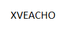

Viernes 1
Soy la derivada de Cos x
Sabado 2
Responda que significa la imagen
Domingo 3
Derivar: f(x)= 2senx-3cosx
Lunes 4
Nombre de regla la cual multiplica la derivación interna y externa de una función
Martes 5
Lugar matemático donde se plasman las derivadas
Miercoles 6
Resuelva la siguiente situación problema:
Jueves 7
Encuentra el valor de las letras
Viernes 8
Derivada de un numero al cualdrado sumado el mismo numero por seis

Sabado 9
Deriva las siguientes expresiones y forma las palabras
Domingo 10
¿Verdadero o Falso?
Lunes 11
¿Que regla de derivación se usaria?
Martes 12
Derivada de cot x
Miercoles 13
Señale cual es igual al valor dado:
Jueves 14
Una teniendo en cuenta las reglas de derivación
Viernes 15
¿Como resolveria la siguiente derivada? Evidencie los pasos
Sabado 16
Halla dos numero tales que su producto sea 64 y su suma sea minima
Domingo 17
Crea y resuelve una derivada la cual de como resultado tu edad en meses
Lunes 18
Haya dos numeros totales que su producto sea 36
Martes 19
Resuelve la siguiente operación mediante derivación
Miercoles 20
Resuelva la siguiente derivada por limites:
Jueves 21
Analiza la siguiente trayectoria de una pelota, encuentra sus puntos criticos

Viernes 22
Encuentra la derivada de la función tan(x)
Sabado 23
Escriba la derivada de la función y=csc(u)
Domingo 24
Ordene las letras para obtener una palabra
Lunes 25
Encuentra la función de la siguiente grafica:
Martes 26
Miercoles 27
Encuentra los intervalos de crecimiento de la siguiente función:
Jueves 28
Une la figura con el equivalente a la derivada de la función
Viernes 29
Sabado 30
Encuentre la derivada de la función